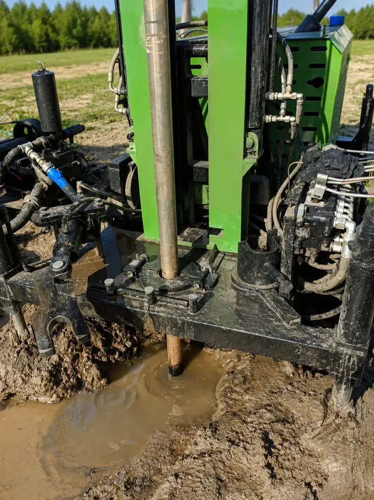

- Strona główna
- Dla instalatorów
Wykonamy dolne źródło pod Twoją instalację
Twój klient dostaje ciepły dom, a Ty dolne źródło z protokołem, dokumentacją i terminem z naszego grafiku, nie z cudzej kolejki. Robimy odwierty, sondy Helix, kolektory i układy woda-woda pod urządzenie dowolnej marki. Ty odpowiadasz za kotłownię, my za to, co pod ziemią. Marka wykonawcza: Pan Krecik.
Zakres podwykonawstwa
- Odwierty pionowe także na ciasnej, gotowej działceWłasna, kompaktowa wiertnica HR-606S, do 100 m na otwór. Na płuczkę w gruntach miękkich, na młotek w twardych i skale.
- Sondy koszowe DEWAX HelixGdy głęboki odwiert nie wchodzi w grę. Dobór do konkretnych warunków gruntu.
- Kolektory poziome i układy woda-wodaPrzy dużych działkach albo potwierdzonych, stabilnych warunkach wodnych.
- Co dostajesz Ty i Twój klientDolne źródło gotowe do podłączenia, próba szczelności pod ciśnieniem z protokołem, instalacja napełniona glikolem i odpowietrzona, dokumentacja powykonawcza i zdjęciowa, numery seryjne sond.
Formalności geologiczne
Powyżej 30 m przygotowujemy projekt robót geologicznych i zgłoszenie do starostwa, powyżej 100 m plan ruchu pod nadzorem górniczym. Przed wyceną sprawdzamy profil geologiczny w bazie PIG-PIB, a co dzieje się z ceną przy gorszej geologii, zapisujemy w umowie przed startem.

Warunki współpracy i narzędzia partnerskie
Podwykonawstwo
Dolne źródło pod pompę dowolnej marki: Thermokrafft, Buderus i inne. Zakres, termin i odpowiedzialność za dodatkowe metry ustalamy w umowie, indywidualnie do inwestycji.
Urządzenia
Thermokrafft i Buderus na warunkach partnerskich do ustalenia. Wsparcie techniczne i części do Thermokrafft mamy w kraju.
Kreator ofertowy (kod dostępu)
Narzędzie dla partnerów do wystawiania ofert i umów: dobór, kosztorys, PDF. Dostęp po nawiązaniu współpracy. To nie jest narzędzie dla klientów indywidualnych, oni korzystają z publicznego kalkulatora.
DEWAX GEO
Raport geologiczny z danych PIG-PIB dla otworu, który planujesz: profil warstw z otworów archiwalnych, parametry z Mapy Potencjału Geotermii Niskotemperaturowej, warunki wodne, szacunek metrów dla mocy pompy.
Nawiąż współpracę
Napisz, jakie pompy montujesz i w jakim regionie działasz. Odpowiadamy w jeden dzień roboczy.